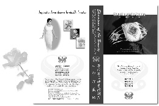

(Disponible en version chinoise et anglaise) |
 Maître Suprême Ching Hai, au talent artistique sans pareil, transforme les pierres les plus banales de ce monde en de précieux joyaux du Paradis pour rappeler aux enfants prodiges de Dieu sur Terre de rentrer à la Maison.
Maître, un jour, a dit : " Porter les bijoux Célestes vous rappelle votre grandeur intérieure et vous rappelle d'obtenir la libération et d'aller au paradis. Cela vous inspire de cultiver votre propre perfection jusqu'à ce que vous deveniez votre propre Maître, lorsque vous l'oublierez et que vous transcenderez les problèmes terrestres et que vous serez comme un bateau flottant sur l'océan.
Afin de satisfaire d'innombrables être sensibles à travers le monde qui n'ont pas la chance de voir les authentiques créations artistiques d'un Maître vivant, la compagnie de bijoux Célestes S.M. a créé une série classique de l'âge d'or, "L'élévation de la beauté", une vidéocassette sur les bijoux Célestes. La beauté de ses belles images conduisent ceux qui la regardent, à travers les écritures sans mots que Maître a apportées dans ce monde ordinaire.
Maître a, un jour, observé : " Pourquoi les gens de ce monde aiment-ils les objets brillants ? C'est parce qu'au fond de leur coeur, ils se souviennent de la qualité radieuse de leur lumière intérieure. C'est la raison pour laquelle ils aiment les diamants et les pierres précieuses. Ce qui ne fait pas d'eux des matérialistes. C'est le désir profond que l'âme a de retourner à sa dimension brillante, au royaume intérieur qui brillera toujours.
Au fur et à mesure que vous regardez la vidéocassette, le secret des bijoux Célestes se dévoile sous vos yeux.